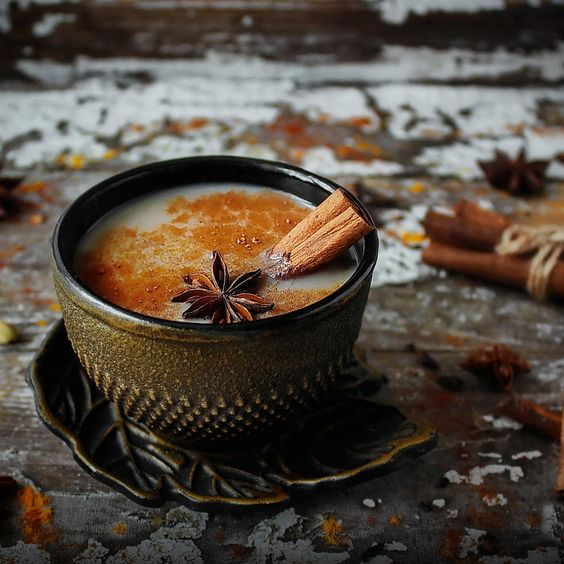

Чай как национальное достояние
Япония
Матча - японский порошковый зеленый чай. Именно этот чай традиционно используется в классической японской чайной церемонии. Матча богата антиоксидантами, сохраняет молодость и способствует регенерации кожи.

Индия
Чай масала («чай со специями») - получаемый путем заваривания чая со смесью индийских специй и трав. Фиксированного способа приготовления чая масала нет, и многие индийские семьи имеют свои собственные рецепты.
Турция
Турецкий чай заваривается с помощью специального двойного заварного чайника. Вода доводится до кипения в большом нижнем чайнике. Затем часть кипятка используется для заваривания измельченных чайных листьев в верхнем чайнике, где получается очень крепкая заварка.Чай подается в стеклянных стаканах формы бутона тюльпана с кусочками сахара.
Таиланд
Синий чай Анчан из Таиланда — это чай, получаемый из цветков клитории тройчатой (Clitoria ternatea), которая растет в тропических регионах Юго-Восточной Азии. Цветы клитории тройчатой содержат природный краситель, называемый цианином, который при приготовлении чая придает ему необычный синий цвет.